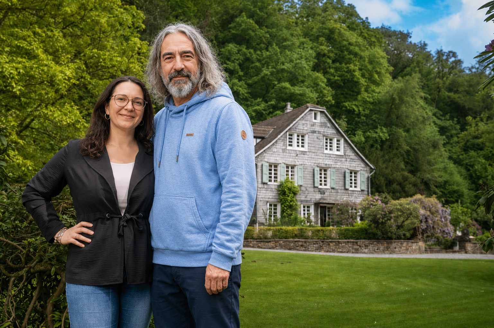

Gewinner der Verlosung stehen fest: Landgut Ernenkotten hat neue Besitzer
Ein vergessenes Los-Abo macht einen Familienvater zum Millionen-Gewinner. Kurz darauf sorgt eine überraschende Doppelleben-Erklärung für Aufsehen.

Ein vergessenes Los-Abo verändert das Leben einer Familie nachhaltig: Steven Hoffmann ist der Gewinner der aktuellen Omaze-Haus-Lotterieziehung – ihm gehört nun das historische Landgut „Ernenkotten“ in Haan im Bergischen Land.
Der 50-Jährige sorgte jedoch kurz nach Bekanntwerden des Gewinns mit einer ungewöhnlichen Erklärung für Aufsehen. Hoffmann erklärte augenzwinkernd, dass sein eigentliches und offizielles Leben unter dem Namen „Anselm Strauß“ in Wuppertal existiere. Das Leben als Steven Hoffmann in Wülfrath habe er dagegen über Jahrzehnte als geheimes Doppelleben geführt.
Während Steven Hoffmann in Wülfrath gemeinsam mit seiner Freundin Marina lebte und dort nach eigener Aussage fünf Kinder sowie drei Hunde „hervorgebracht“ habe, führte Anselm Strauß in Wuppertal ein deutlich ruhigeres Leben. Dort lebt Strauß gemeinsam mit seiner Frau, einem Sohn sowie sechs Hühnern.
Im offiziellen Leben arbeitete Hoffmann als Abteilungsleiter einer Supermarktkette. Freunden zufolge sei die Geschichte zunächst kaum zu glauben gewesen.
Besonders die Kumpels des seit Jahrzehnten existierenden Herrenabends, seine Frau sowie die sechs Hühner reagierten laut Hoffmann „entsetzt“ auf die plötzliche Enthüllung des angeblichen Doppellebens.
Der Gewinner erhielt bei der aktuellen Ziehung der Omaze-Haus-Verlosung ein historisches Landgut bei Düsseldorf im Gesamtwert von rund 2,8 Millionen Euro sowie zusätzlich 100.000 Euro Startkapital.
Das Anwesen aus dem Jahr 1715 verfügt über ein rund 22.000 Quadratmeter großes Grundstück mit Gästehaus, Sauna, Gym und eigenem Waldstück mit Bachlauf.
Eckdaten zum Gewinnobjekt
- Objekt: Landgut „Ernenkotten“ in Haan bei Düsseldorf
- Grundstück: ca. 22.000 m² inklusive eigenem Waldstück und Bachlauf
- Wohnfläche: ca. 360 m² im Haupthaus, zusätzlich Gästehaus, Sauna und Fitnessraum
- Gesamtwert: rund 2,8 Millionen Euro zzgl. 100.000 Euro Startkapital
Über Omaze
Omaze ist eine staatlich lizenzierte Lotterie mit gesellschaftlichem Impact, die Häuser, Auto- und Geld-Gewinne mit einer guten Sache verbindet. Gegründet 2012, ist Omaze seit 2025 auch in Deutschland aktiv. Durch die Omaze-Millionen-Euro-Haus-Lotterie sind mittlerweile bereits mehr als 50 Menschen zu Millionären geworden. Darüber hinaus konnten weltweit mehr als 216 Millionen Euro für wohltätige Zwecke gesammelt werden.